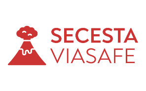

SECESTA ViaSafe

Within the P.O. FESR SICILIA 2014/2020, Thematic Objective 1 – Research, Technological Development and Innovation, Specific Objective 1.1 - Increase in business innovation activity, Action 1.1.5 - Support for technological advancement of businesses through funding for pilot lines and early validation and large-scale demonstration of products, the SECESTA ViaSafe Project was funded: the application of the monitoring network for volcanic ash fallout from Mount Etna to mobility management in the Etna area.
The frequent explosive activity of Mount Etna, with almost 200 documented eruptions in the last 30 years, highlights the need for efficient monitoring of emission, transport, and fallout phenomena of volcanic ash, in order to organize necessary activities for air traffic planning and optimized road management.
In particular, the installation and experimental validation of a distributed network of sensor nodes in the southern part of the volcano was carried out, primarily aimed at airport operations and the safety of travelers using motorways. Several prototypes were developed for monitoring volcanic ash fallout, based on vision sensors, together with engineered nodes for monitoring volcanic ash fallout, based on the model developed for these prototypes. The distributed system for observing and measuring the transport and ground deposition of volcanic ash improves the operations of Catania International Airport, minimizing runway and parking area cleaning times, and further enhancing the safety of arriving and departing air traffic. Additionally, knowledge of the amount and characteristics of ash falling on urban and suburban areas allows for rapid and efficient removal of volcanic ash from roads and paved urban areas. The result is a significant improvement in road safety, mitigating the risk due to slipperiness caused by volcanic particulate matter remaining on road surfaces, and in the health of residents in ash-fall areas, due to the formation of PM10 or smaller particles produced by the fragmentation of ash (millimeter particles) and volcanic lapilli (centimeter particles) caused by continuous vehicle passage, as wheels are capable of fragmenting the fragile particulate matter, mostly composed of volcanic glass. The development of a dedicated GIS allowed extraction of the quantities needed to calculate the volume and type of volcanic material deposited. Finally, specifically for the A18 motorway (Messina - Catania), the development of a timely system to reduce the maximum speed of vehicles in circulation, depending on ash fall during volcanic events, helps prevent the numerous accidents that have occurred in recent years, some of them fatal. In particular, the system processes, for each eruptive event, data from the predictive model of ash fallout along the A18 motorway and the RA15 motorway (known as the Catania ring road) to generate alert messages. Messages have been coded to be automatically sent to the information systems of managing authorities, for information processing and display of warnings to motorists on variable message signs along the motorway.
The results achieved with the SECESTA project represent a solid foundation for developing an IT platform capable of using, almost in real time, information collected from the system monitoring volcanic ash fallout. Integrating the measurement system developed during the SECESTA project with additional sensor solutions, data processing platforms, and predictive models for atmospheric transport (using algorithms based on dispersion models and meteorological models validated in real time by acquired data) and ground accumulation of volcanic ash would allow the development of a series of services to make mobility more efficient and safer in the Catania metropolitan area, benefiting from an effective and reliable permanent monitoring system for volcanic ash fallout.
To facilitate the dissemination of information about ash fallout to the local population, a smartphone App (called EtnaAshApp) was also developed for users and relevant authorities, who can be constantly updated on ash fallout and the usability of ordinary roads.
Thematic intervention area of the regional innovation strategy for specialization S3 and technology used: "Smart Cities & Communities", particularly in the sub-area "Smart Mobility".
The project amount is €1,922,544.00; the grant amount is €1,525,733.33.